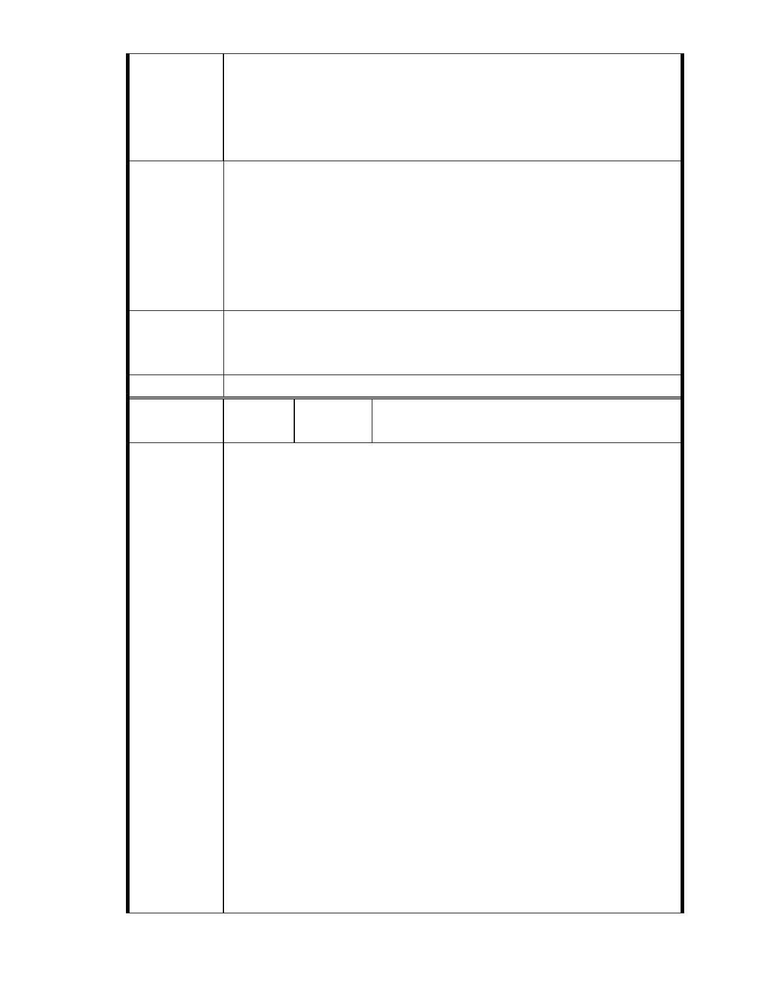

促進民間參與公共建設法之重大公共建設範圍
社會福利設施－定義：
社會福利設施指下列各項設施：
一、依社會福利相關法令設立之社會福利機構及其設施。
訴求：
建請台北市都市計畫委員會否決本案，本案土地分區維持保護區。
本案土地應作符合保護區規定之用途，現況不符保護區管制之使用
建議辦法
應立即改正。
本案土地原地貌為埤塘、農地、以及綠地，建議以「環境保護」為
法印的慈濟基金會，作為環境保護慷楷模，將本基地恢復為原始地
貌。
一、本案已進入都市計畫法定程序，後續將依都市計畫委員會審定內容
市府說明
為準。
二、相關陳情意見將納入本案審查人民意見，依法定程序辦理。
委 員 會 決 議 同編號 1。
編
號 270
陳情人 林 姿 儀 （ MA201303190182 、 MA201303200156 、
MA201303250091）
我是一位所謂的慈濟人，同時也是一位台北市民，更是一位內湖居民。
當知道慈濟內湖園區的這個改善案，希望透過簽名連署的方式，來讓內
湖居民以及更多的社會大眾都能夠瞭解改善的內容以及願景時，源自於
身為內湖居民的需要和期待的驅動之下，內湖區慈濟人自動自發的深入
基層，四處向民眾解說這個案子，並且邀請民眾簽名連署，將他們對這
個案子的認同和支持以簽名連署的具體行動表達給政府官員知道。
陳情理由
連續幾天，當中有社區、捷運站、電影院、市場、沿路的店家，對象則
男女老少都有，在這些男女老少的對象當中，也有多位是居住在台灣的
外國人。每位邀請民眾連署的內湖區慈濟人，總是一位又一位，一次又
一次的將慈濟內湖園區的改善內容，包括柏油路面、老舊鐵皮屋的現況
以及改善後所提供的〈文藝展演中心、幼教中心、親子教育、圖書館、
長青學苑、日間托老所〉等等的社會福利中心內容，「明確」的向每一
位民眾解說之後，絕大多數的民眾都非常歡喜踴躍的簽名連署，支持慈
濟內湖園區的這個改善案能夠趕快通過審查，讓內湖居民的生活環境可
以更優質，人文、心靈的安住所可以更豐富。
經過幾天的邀請和解說，內湖區慈濟人總數邀請了約 33000 位民眾
簽名連署。在約 33000 位的總數當中，我個人邀請了 313 位民眾簽名連
署。在 300 多位的民眾當中，我只有遇到一位民眾告訴我他是反對的，
他反對的理由是：他不願意那座山被剷平，進而被許多建築物取代。顯
- 313 -